ИГРАТЬ. РИСОВАТЬ. УЧАСТВОВАТЬ. ОБЩАТЬСЯ.
Мы соединяем разные активности, оформление, игры и мерч в одном месте. У стенда нет задачи быть витриной только одного проекта — для нас важнее общее впечатление и то, что происходит вокруг него.
ИНТЕРАКТИВНЫЙ СТЕНД · АКТИВНОСТИ · МЕРЧ · ФЕСТИВАЛИ
ИНТЕРАКТИВНЫЙ СТЕНД
Место, где можно поиграть, порисовать, поучаствовать в активностях, посмотреть мерч и просто хорошо провести время.
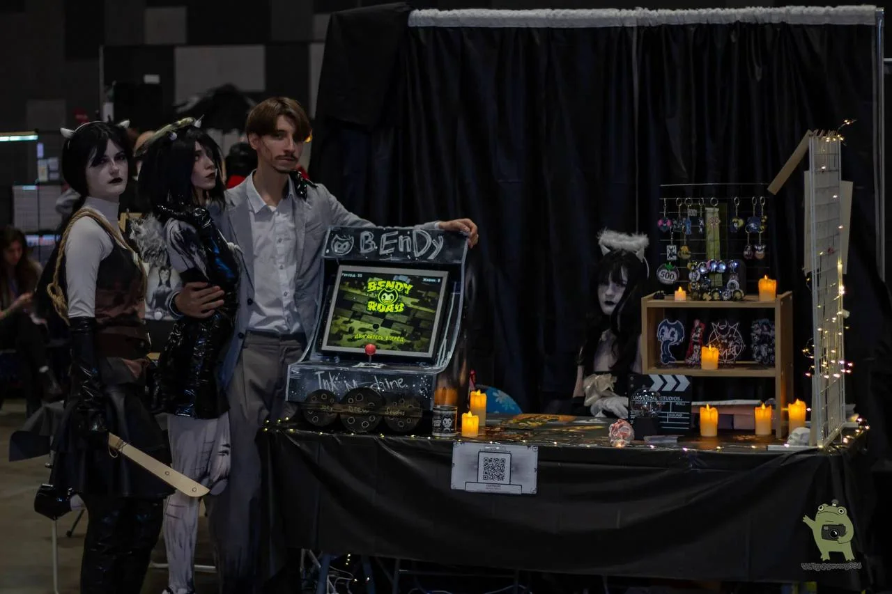
01 / О НАС
Культ Трости — это интерактивный стенд, который мы собираем для фестивалей и мероприятий. Нам нравится делать пространство, куда хочется подойти, задержаться и попробовать всё своими руками.
ИГРАТЬ. РИСОВАТЬ. УЧАСТВОВАТЬ. ОБЩАТЬСЯ.
Мы соединяем разные активности, оформление, игры и мерч в одном месте. У стенда нет задачи быть витриной только одного проекта — для нас важнее общее впечатление и то, что происходит вокруг него.
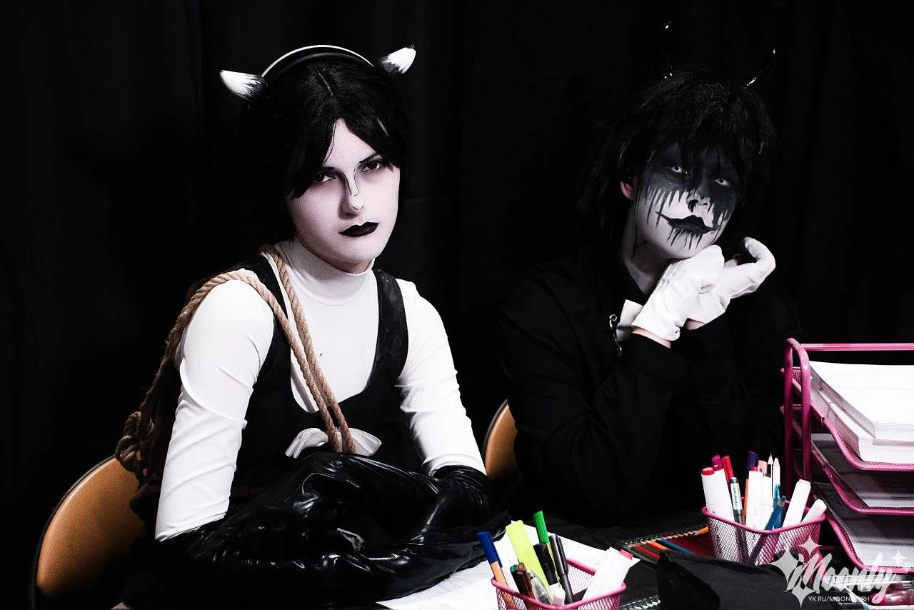
02 / ЧТО ДЕЛАТЬ
На стенде несколько разных активностей — можно выбрать одну или попробовать всё по очереди.
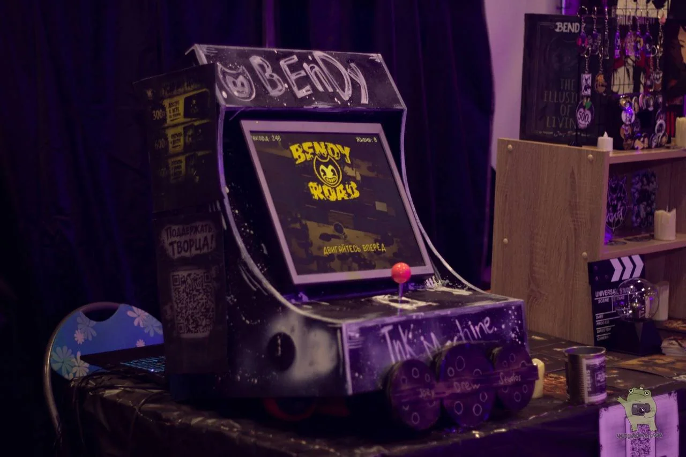
Садись и играй — автомат работает прямо на стенде.
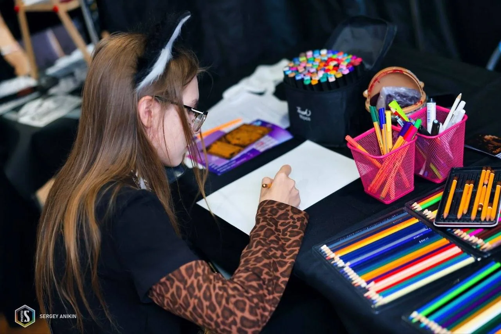
Можно порисовать, поэкспериментировать и оставить свой след.
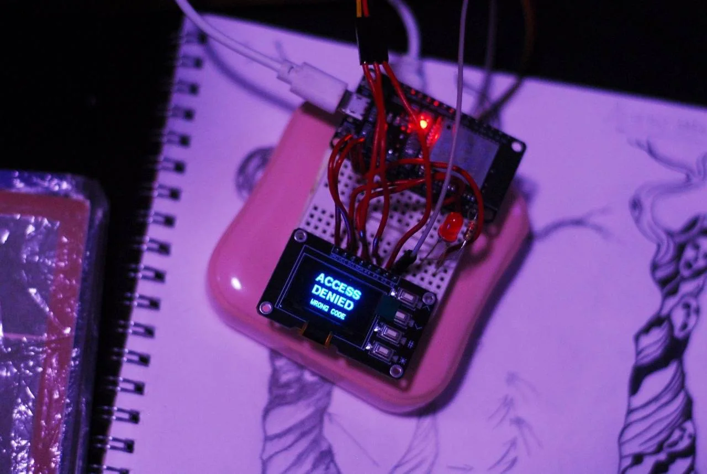
Тир и другие активности — чтобы на стенде всегда было что попробовать.
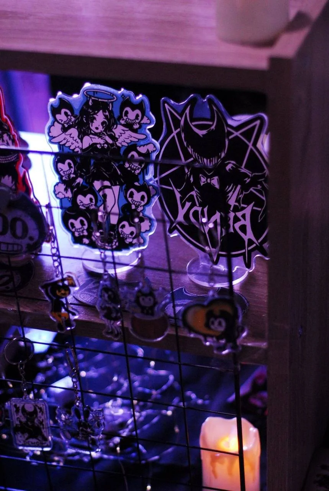
Наш мерч можно посмотреть и купить прямо на стенде.
03 / ГАЛЕРЕЯ
Немного фотографий, чтобы сразу понять, как всё выглядит вживую.
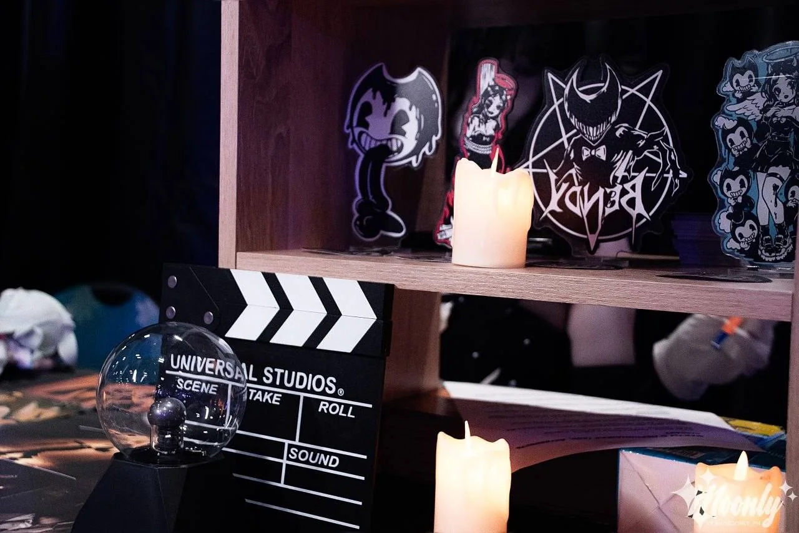
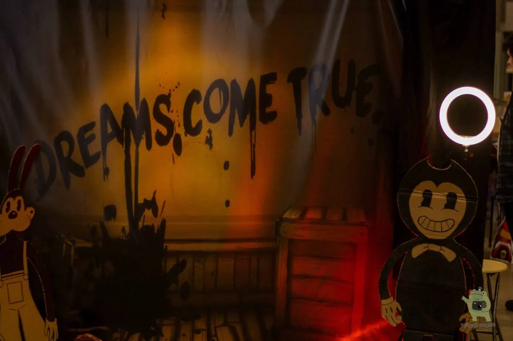
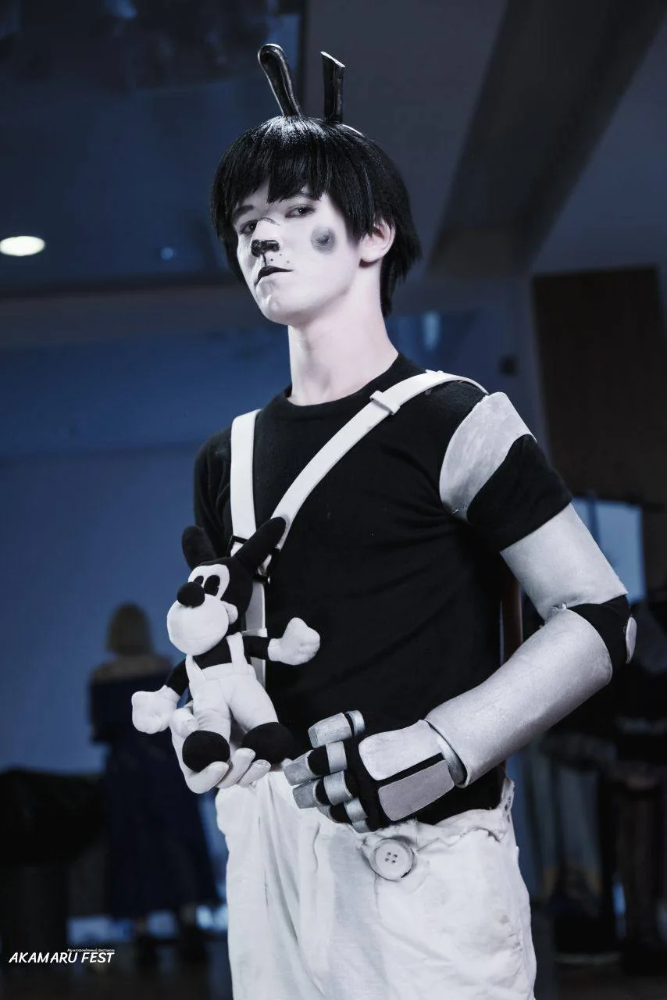
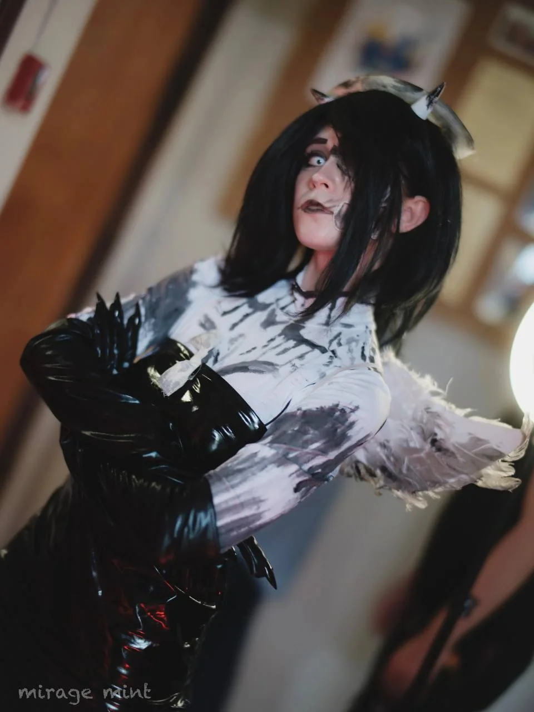
04 / МЕРОПРИЯТИЯ
Наш стенд живёт не только в фотографиях — мы выезжаем с ним на фестивали и встречаемся с посетителями вживую.
05 / НАШИ ПРОЕКТЫ
Помимо самого стенда, у нас есть собственные проекты. Один из них — Bendy Road.
ИГРА / BENDY ROAD
Наша аркадная игра, в которую можно сыграть на стенде. Для неё мы сделали отдельную мини-страницу.
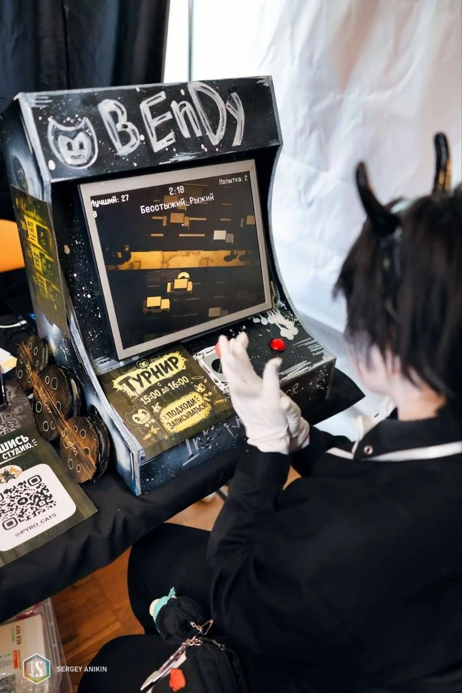
06 / КОНТАКТЫ
Подписывайся на стенд, следи за нашими новостями и проектами.